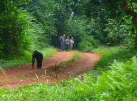
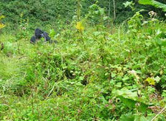
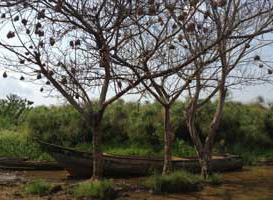

Chimps in the Budongo Forest
This journey includes tracking chimpanzees in the Budongo Forest, which covers an area of 793 square kilometers. With more than 800 individuals, it is home to the largest population of these great apes in Uganda. The forest is also a good place to see nine other primates including black and white colobus, blue and red-tailed monkeys. Birds and butterflies are abundant. Many species in Budongo are in the International Union for Conservation of Nature endangered category.
View Itinerary [add a link here]
�

Gorillas in the Mist
Wonders abound within the dense vegetation of Bwindi Impenetrable National Park, home to more than half of the world's mountain gorillas. For our Gorillas in the Mist Safari tour, you will hike into this dense forest looking for a family of gorillas. Sharing space with the stunning male silverback gorilla and his family will be a life-changing experience. Permits are highly limited and tracking groups small. Tracking Uganda gorillas can sometimes be tough but the physical interaction is both fascinating and deeply emotional.
View Itinerary [add a link here]

Following the Bird Migration
The Albertine Rift is home to more than half of Africa's bird species and nearly 40 percent of the mammals in Africa. There are more endemic mammals, birds and amphibians here than any other site in Africa. Although the Albertine Rift covers 1 percent of the continent's landmass, it contains 14.5 percent of its plant species. Come with us to visit this vibrant land, where your list of birds with be unlike anything you've experienced before.
View Itinerary [add a link here]